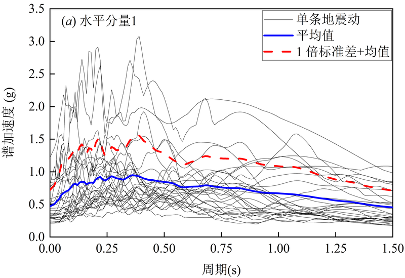
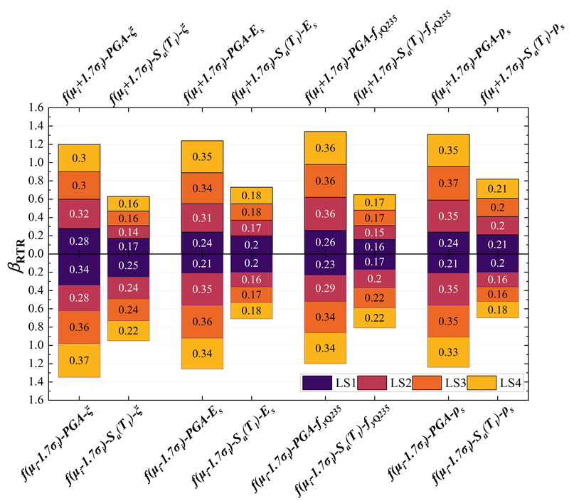
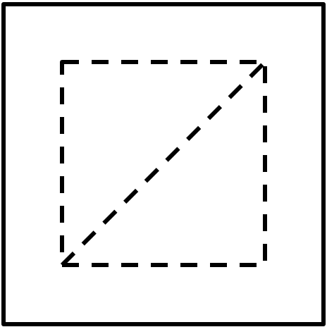
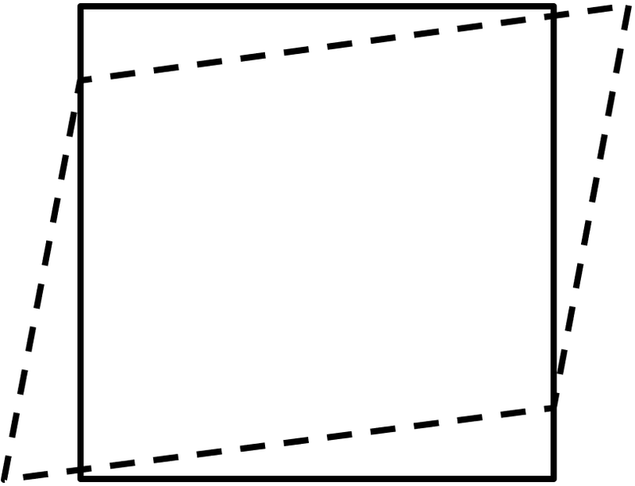

教育经历
硕士学位 · 土木工程与建筑学院
武汉理工大学 (Wuhan University of Technology)
Master Program, School of Civil Engineering and Architecture
学士学位 · 土木工程学院
南京林业大学 (Nanjing Forestry University)
Bachelor Program, College of Civil Engineering
研究方向
本科阶段 — 地震易损性分析（指导教师：张延泰 副教授）
空间网壳结构广泛应用于大型公共建筑与工业设施，一旦在地震中破坏或倒塌，将造成严重损失。然而，网壳结构在不同特性地震动下的失效模式复杂多样，现有的损伤评估方法难以统一适用，且建模不确定性对地震倒塌风险的影响尚不清晰。本课题以施威德勒型单层球面网壳结构为对象，围绕"损伤评估→指标选取→不确定性量化"的递进逻辑，建立了系统的地震易损性分析框架。相关成果发表于 Structures（2024, 65: 106671）。
① 结构损伤演化分析与多指标评估
基于 OpenSees 建立三种矢跨比（0.20、0.25、0.30）网壳的纤维单元模型，选取 PEER 数据库中近场脉冲型与远场地震动各 30 条，采用多条带分析法在 7 个地震强度水平下进行非线性动力时程分析。核心发现：远场地震作用下杆件塑性发展程度比近场更显著，但最大节点位移趋势相反；矢跨比越大，严重损伤状态下的抗震能力越强；同矢跨比下远场地震造成的破坏大于近场脉冲型地震。为解决单指标评估的局限性，引入多指标地震损伤评估模型，综合考虑节点最大位移、平均塑性应变、1P 与 8P 杆件比例四项响应指标，基于标准离差法客观赋权，重新界定了损伤状态与极限状态的划分阈值。
② 地震动强度指标优化与不确定性量化
地震动强度指标（IM）是连接地震危险性与结构响应的关键纽带，其选取直接影响易损性分析的可信度。针对网壳短周期动力特性，引入 7 种三向地震动强度表征方式（AMV、GMV、SRSS 等），系统比较了 Sa(T₁) 系列组合型指标在四个损伤极限状态下的有效性与充分性。核心发现：考虑高阶振型影响的组合型指标在近场地震下保持较低的变异性；据此提出改进指标 IMn 及其最优组合周期数确定方法。进一步，基于拉丁超立方抽样（LHS）构建随机结构模型、结合一次二阶矩法（FOSM）量化了阻尼比、钢材屈服强度等参数的灵敏度，揭示了建模不确定性随损伤加剧而增大的规律，最终给出了考虑不确定性的倒塌风险年发生概率。

三种矢跨比 Schwedler 型单层球面网壳有限元模型及动力特性

近场与远场地震下损伤指数分布及 LS1~LS4 易损性曲线
研究生阶段 — 计算力学领域新方法（指导教师：李冬明 副教授）
晶格弹簧模型（LSM）以离散弹簧网络模拟连续体力学行为，天然适合断裂模拟，但自 Hrennikoff（1941）提出以来始终面临一个根本性理论缺陷：模拟各向同性介质时，泊松比被锁定为固定值（平面应力 v=1/3，平面应变 v=1/4）。现有改进方案通过引入梁单元、角弹簧或多体势等手段扩展参数空间，却普遍以增加自由度、提高计算成本、丧失物理直观性为代价。本课题提出各向同性弹性晶格弹簧模型（IELSM），以附加体积约束修正应变能，在不增加自由度的前提下实现全范围可调泊松比，且与标准有限元框架无缝兼容。相关成果已撰写英文论文（导师一作，本人二作），选题来源于国家自然科学基金项目。
① 附加体积约束的理论建模与参数映射
从应变能密度角度重新审视了 LSM 泊松比固定的本质原因——轴向弹簧的单一本构关系导致体积模量与剪切模量耦合。IELSM 的核心创新在于：在经典 LSM 应变能中引入附加体积模量参数 k(v)，直接修正体积变形刚度以实现两弹性参数的独立调控。理论贡献：导出了轴向刚度与附加体积模量到宏观弹性常数（E, v）的精确解析映射关系，覆盖平面应力 -1 < v < 1 与平面应变 -1 < v < 0.5 的物理容许全范围，且严格满足应变能旋转不变性。当 k(v) = 0 时模型自然退化为经典 LSM，具有良好的理论继承性。
② 有限元框架嵌入与数值验证
为实现计算层面的高效部署，将附加体积约束的 8×8 刚度矩阵精确等效分解为 10 个标准力学组件的组合——含轴向弹簧、剪切弹簧与转动弹簧，通过直接刚度法实现与标准 FEM 的流程统一。数值特性：特征值分析表明，IELSM 在泊松比全范围内刚度矩阵保持正定，有效抑制了 CST 单元的寄生剪切锁死和 Q4 单元的沙漏零能模式。通过单轴拉伸（含随机角度网格旋转验证宏观各向同性）、纯剪切、简支梁弯曲、无限大板圆孔应力集中、中心裂纹与十字形裂纹尖端应力强度因子等 6 类基准算例，系统验证了模型的精度、网格收敛性与计算效率——在弯曲问题中以 2.9% 的误差达到与 FEM-Q4 相当、显著优于 DLSM 的精度水平。

IELSM 代表性体积单元的物理分解：LSM 轴向弹簧 + 附加体积约束

附加体积约束的刚度等效分解及三类离散方案总势能-泊松比对比
科研成果
期刊论文
Seismic vulnerability analysis of single-layer lattice shells with different rise-to-span ratios: focusing on the selection of Sa(T₁)-based intensity measures
Structures, 2024, 65: 106671
DOI 🔗专利
—— 专利名称 ——
专利号：CN202210972248.9 · 2022-11-04
—— 专利名称 ——
专利号：CN202222132375.6 · 2023-03-24
荣誉奖项
2024
- —— 荣誉/奖项名称 ——
2023
- —— 荣誉/奖项名称 ——
2022
- —— 荣誉/奖项名称 ——
2021
- —— 荣誉/奖项名称 ——